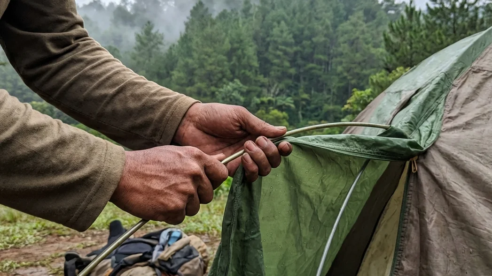

1. Tenda: Benteng Pertahanan Utama di Alam Bebas
Saat Anda mengambil keputusan untuk meninggalkan kenyamanan kasur rumah dan melangkah ke alam pegunungan, Anda secara otomatis telah menyerahkan keselamatan Anda pada peralatan yang Anda bawa. Di antara seluruh perlengkapan tersebut, tenda adalah hirarki tertinggi. Tenda bukanlah sekadar tempat untuk merebahkan punggung; ia adalah benteng pertahanan (shelter) satu-satunya yang memisahkan tubuh rapuh Anda dari amukan cuaca ekstrem, serangga liar, hembusan angin beku, hingga guyuran badai pegunungan.
Sayangnya, banyak wisatawan pemula yang menganggap remeh proses mendirikan tenda. Mereka berpikir bahwa merakit tenda hanyalah soal menyambung tiang dan menutupinya dengan kain. Padahal, ketidaktahuan terhadap fungsi spesifik setiap alat seringkali berujung pada tenda yang bocor, ambruk ditiup angin, atau menjadi sangat pengap. Melalui panduan Mengenal Komponen dan Alat Tenda Camping: Kunci Mendirikan Tenda Dome yang Kokoh ini, kita akan membedah secara teknis anatomi sebuah tenda dome. Anda akan memahami secara mendalam fungsi dari flysheet, rahasia tali pancang (guy lines), hingga kesalahan-kesalahan pemula yang pantang Anda lakukan di lapangan.
2. Anatomi Dasar Tenda Dome Double Layer
Tenda berbentuk setengah bola (dome) adalah standar emas dalam dunia pendakian. Jika Anda berencana berkemah di daerah berhawa dingin seperti Batu Malang, hukum alam mewajibkan Anda memakai tenda bertipe Double Layer (dua lapis kain).
Lapisan Dalam (Inner Tent) yang Bernapas
Inner tent adalah ruang utama tempat Anda tidur. Kain pada lapisan ini biasanya mengombinasikan bahan polyester tipis dengan panel jaring (mesh) yang cukup lebar. Fungsi utamanya bukanlah menahan air hujan, melainkan untuk memberikan privasi sekaligus memastikan sirkulasi oksigen tetap berjalan lancar. Panel jaring ini bertugas membuang uap panas yang keluar dari napas dan keringat Anda agar tidak terperangkap di dalam ruangan.
Lapisan Luar (Flysheet) Penahan Badai
Flysheet (atau outer tent) adalah sang pahlawan sesungguhnya. Terbuat dari bahan Waterproof Polyurethane (PU), kain ini akan membungkus inner tent Anda secara menyeluruh. Fungsinya ganda: pertama, sebagai payung raksasa yang memblokir seratus persen air hujan dari luar. Kedua, ia bertindak sebagai penangkap embun (kondensasi). Uap napas Anda yang keluar dari inner akan menabrak dinding flysheet ini dan berubah menjadi air, lalu mengalir turun ke tanah tanpa menetes ke wajah Anda.
BACA JUGA (Edukasi Tenda):
3. Komponen Rangka dan Pondasi Tenda
Sebuah kain penahan air tidak akan berarti apa-apa jika tidak ditopang oleh kerangka penyangga yang kokoh dan presisi.
Tiang Rangka (Frame / Poles)
Frame adalah tulang punggung dari tenda dome. Umumnya, tiang ini terbuat dari bahan fiberglass (cukup berat namun ekonomis) atau aluminium alloy (sangat ringan dan jauh lebih lentur). Bentuk melengkung yang dihasilkan oleh frame inilah yang menciptakan struktur aerodinamis khas tenda dome, membuatnya sanggup memecah angin dari berbagai arah tanpa mudah patah.
Pasak (Pegs / Stakes) Pengunci Tanah
Berupa batangan besi, aluminium, atau baja berbentuk kail yang berfungsi memaku tenda ke bumi. Pasak harus ditancapkan menembus lubang sudut tenda dengan kemiringan sudut sekitar 45 derajat berlawanan arah dengan tarikan tenda. Tanpa pasak yang kuat, tenda Anda akan dengan sangat mudah bergeser atau bahkan terbang layaknya layang-layang saat dihantam badai angin lembah.
Tali Pancang (Guy Lines) Penahan Angin
Guy lines adalah tali pengikat yang biasanya menempel pada sisi-sisi luar flysheet. Seringkali pendaki pemula malas memasang tali ini. Padahal, tali pancang berfungsi mendistribusikan tekanan angin agar tidak hanya berpusat pada rangka frame. Tali ini juga menarik kain flysheet agar tegang membusung (pitching sempurna), sehingga air hujan akan langsung meluncur turun dan tidak menggenang di atap tenda.
4. Aksesoris dan Fitur Tambahan pada Tenda Dome
Tenda modern telah dilengkapi dengan beberapa sentuhan arsitektur kecil yang sangat mendongkrak kenyamanan Anda saat menginap di alam.
Teras Tenda (Vestibule) untuk Aktivitas
Vestibule adalah area transisi antara pintu luar flysheet dan pintu dalam inner tent. Ruangan ekstra ini tidak beralaskan karpet tenda (langsung menyentuh tanah). Berfungsi sebagai garasi untuk menaruh sepatu bot kotor, ransel, dan paling penting: bertindak sebagai dapur darurat tempat Anda menyalakan kompor portabel saat di luar sedang terjadi hujan lebat.
Jendela Ventilasi (Ventilation Windows)
Terletak di bagian atas flysheet, biasanya disangga oleh sepotong kain kaku (velcro). Ventilasi ini wajib dibuka (disangga) meski dalam keadaan hujan. Ia berperan sebagai cerobong asap untuk membuang hawa panas dan uap kondensasi dari dalam agar sirkulasi udara (cross-ventilation) tetap sehat.
Alas Tenda Tambahan (Footprint)
Footprint adalah lembaran kain terpal atau parasut ekstra yang digelar sebelum Anda mendirikan tenda. Ia bertugas melindungi lantai bawaan tenda (floor) dari tusukan ranting, batu tajam, serta memblokir rembesan lumpur basah secara langsung. Dengan adanya footprint, umur keawetan tenda Anda akan bertambah berkali-kali lipat.

Membengkokkan dan memasukkan frame fiberglass ke dalam selongsong inner tenda membutuhkan koordinasi tim yang baik agar struktur dome terbentuk dengan kokoh tanpa patah. (Ilustrasi: Unsplash)5. Langkah-Langkah Mendirikan Tenda Dome yang Kokoh
Memiliki alat mahal menjadi tidak berguna jika Anda salah dalam prosedur pendiriannya (pitching).
Memilih Lokasi (Pitching Spot) yang Tepat
Jangan mendirikan tenda di cekungan tanah karena itu adalah jalur air mengalir saat hujan. Jangan pula di bawah pohon yang memiliki banyak dahan rapuh (rawan tumbang). Pilihlah area yang datar (flat), bersihkan dari kerikil tajam, dan pastikan arah pintu tenda Anda tidak berhadapan langsung dengan arah hembusan angin utama.
Merakit Frame dan Mengaitkan Inner
Gelarlah footprint terlebih dahulu, lalu letakkan inner tent di atasnya. Sambung seluruh ruas tiang frame. Masukkan frame secara menyilang (berbentuk huruf X) pada selongsong (sleeve) atau kaitkan klip (hook) dari inner tent ke rangka tersebut. Bengkokkan frame dan tancapkan ujungnya ke dalam pin (cincin besi) yang ada di keempat sudut bawah tenda. Tenda bagian dalam kini telah berdiri menunduk setengah bola.
Memasang Flysheet dan Menancapkan Pasak
Lemparkan kain flysheet menutupi seluruh kerangka inner. Kunci klip flysheet ke empat sudut bawah. Terakhir, tarik seluruh ujung tenda dengan kuat dan tancapkan pasak ke tanah. Pastikan jarak antara inner dan flysheet merenggang (tidak menempel). Tarik semua tali guy lines dan patok dengan kencang. Tenda yang terpasang dengan benar akan terlihat tegang, rapi, dan tidak ada kain yang berkerut kendur.
6. Kesalahan Umum Saat Mendirikan Tenda
Banyak bencana kecil di lokasi perkemahan diakibatkan oleh kecerobohan yang sebenarnya sangat mendasar.
Tidak Memasang Tali Pancang dengan Benar
Anggapan bahwa cuaca sedang cerah membuat banyak orang malas memasang tali pancang (guy lines). Akibatnya, ketika angin gunung tiba-tiba mengamuk di tengah malam, kerangka fiberglass akan melengkung parah ke dalam, bahkan patah. Tali pancang memberikan pondasi tiga dimensi yang menahan daya dorong angin tersebut.
Flysheet Menempel pada Inner Tenda
Ini adalah pantangan terbesar! Jika Anda menancapkan pasak secara kendur, kain luar (flysheet) akan kendor dan bersentuhan menempel dengan kain jaring dalam (inner). Saat bersentuhan, titik tersebut akan menjadi "jembatan air", di mana uap kondensasi atau air hujan dari luar akan langsung menetes masuk merembes mengenai wajah dan barang bawaan Anda di dalam tenda.
BACA JUGA (Opsi Kemah Praktis):
7. Kesimpulan
Mengandalkan alam bebas sebagai sarana untuk melepas stres (healing) mewajibkan Anda untuk memiliki literasi yang memadai terhadap peralatan pertahanan hidup Anda. Melalui rincian panduan Mengenal Komponen dan Alat Tenda Camping: Kunci Mendirikan Tenda Dome yang Kokoh ini, kita belajar bahwa tenda dome adalah mahakarya rekayasa arsitektur yang brilian. Memahami secara utuh fungsi dari flysheet sebagai tameng air, inner tent sebagai sirkulasi napas, serta guy lines (tali pancang) sebagai penahan struktur badai adalah jaminan agar liburan Anda tidak berubah menjadi tragedi kedinginan. Jika merakit anatomi tenda tersebut dirasa terlalu teknis dan melelahkan, Anda selalu bisa memanfaatkan layanan wisata berkonsep Comfort Camping seperti yang tersedia di Batu Sunrise Camp. Di sana, tenda berspesifikasi tinggi telah dipasang (pitching) dengan sangat sempurna, rapi, dan simetris oleh para ahli, membebaskan Anda dari segala kerepotan fisik sehingga Anda bisa seratus persen fokus mereguk manisnya kedamaian alam pegunungan Kota Batu.